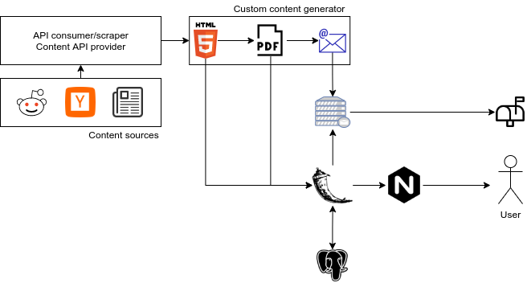
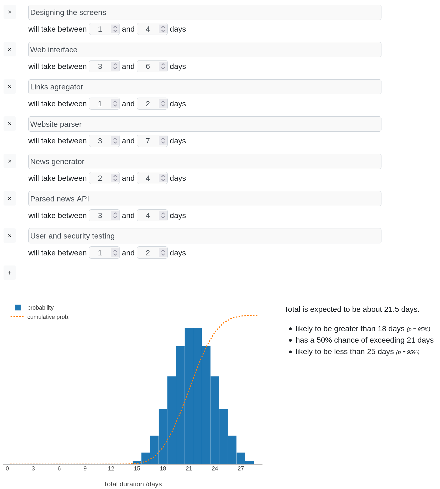

The Papernews Project¶
The papernews is a learning project started in 2021.
Solution architecture¶
Development environment¶
To start developing on the project you should:
Clone the repo if you haven’t already : git clone @github.com:triglex/papernews.git
Create and activate a new virtual environment: ?
Install development requirements pip3 install -r requirements-dev.txt
Run tests to check if everything is working make ci
Deployment¶
Todo.
Specification¶
Table of contents
Description purpose of Papernews
Components
Interaction between components
Estimated time and cost
Description and purpose of Papernews¶
Papernews is an application for generating short summary from given news agregators or directly from a newsletters web sites. The user can define which news he wants to follow and the application will generate new Papernews at the end of each day. The user will be given the Papernews as portable document format that he can recieve via e-mail or he can chose to download it.
Components¶
Papernews has the following components:
Web interface
Links agregator
Website parser
News generator
Parsed news API
NLP summary and topic generator
Parsers and scrapers for news without RSS
User created list of news for category
Multiple Papernews templates
Web interface¶
User operations User can create, remove and edit his account. If user created account and logins, he will be able to access site. User can chose Papernews content based on predifined choice.
- Landing page
SEO (search engine optimizaion)
Page that describes Papernews features
- Design and imlpementation of Papernews templates
Custom templates design
Custom templates implementation
- Develop news subscriber
Page has static (content choser, temaplete choser) and dynamic parts (changing templates of Papernews)
User can filter which news he will see using checkboxes of links that he proveded to the site
Web interface provides aggregated news (for eg. newspapers like format) from user defined rss links
- Checkboxes include:
Hackernews homepage support
Reddit homepage support
Subreddit support
Support for current (maintenance) and new sites with each new version
- Papernews Search
- Search by:
Papernews id
Web interface will created short news ID that will ease access to the news if user printed his daily news on paper.
For example below the heading of one news there will be an ID like “123abcd” and user will be able to search that news by ID or access https://Papernews.com/short/123abcd to view that specific news article.
Papernews date created
Papernews keywords
Papernews category
- Per hour frontpage generator
Papernews content can be updated for desired time periods of day
- Papernews are portable
Papernews can be downloaded
- Papernews can be recieved via e-mail
Users can also schedule tailored e-mails
Papernews can be viewed as HTML
Links agregator¶
- RSS metadata extractor
Component that recieves user RSS links, transforms it and prepares it for website parser.
- Specifically extracts metadata from RSS like:
news heading
user that posted that link
source link (eg. hackernews)
link to the actual news
- NoRSS metadata extractor
Component that recieves raw user links (without RSS support), scrapes them and prepares it for website parser.
- Specifically extracts metadata like:
news heading
user that posted that link
source link (eg. hackernews)
link to the actual news
Website parser¶
Using prepared links scrapes website for summary of that news. After scraping it glues metadata from agregator and prepares newly created blob of data for news generator
News generator¶
Uses data from webside parser, and generates portable document format that can be downloaded or sent via e-mail to your address.
Parsed news API¶
API thats provides access to the news data.
Database¶
Database that stores information about users and Papernews
Applcaiton deployment¶
Deployment of the Papernews applcaiton
Interaction between components¶
Estimated time and cost¶
Estimated cost for 22 days of 2 developers is
22 days * 8h * 2 developers - 352, since our cost is $35/h the cost of programming and designing is $12320.
Maintance 10h - $350
Overhead 4h - $140
Total of $12810
Work Breakdown Structure (WBS)¶
Develop project schedule
- Web interface
Handle user operations
- Develop Papernews list
Application landing page
Develop Papernews templates
Develop default news subscriber (HackerNews(homepage), Reddit (homepage))
Develop custom news subscriber
Develop search (by id, date created, keywords, category)
Develop Papernews custom time of day generator
Develop automatization of e-mailing Papernews
- Links agregators
Develop metadata extractor from RSS
Develop metadata extractor for websites without RSS support
- Website parser
Develop global scraper for key metadata (key = crucial parameters from which the Papernews content will be generated, parameters are: html.body, html.title, html.p)
Develop parser that generates summary from scraped data (scraped in step 2.)
Develop NLP (Natural Language Processor) that generates summary from scraped data (scraped in step 2.)
- News generator
Develop HTML and PDF formats of Papernews
- PapernNewsAPI
Develop API interface for Papernews
- Database
Develop database
- Deployment
Develop project schedule
Application deployment